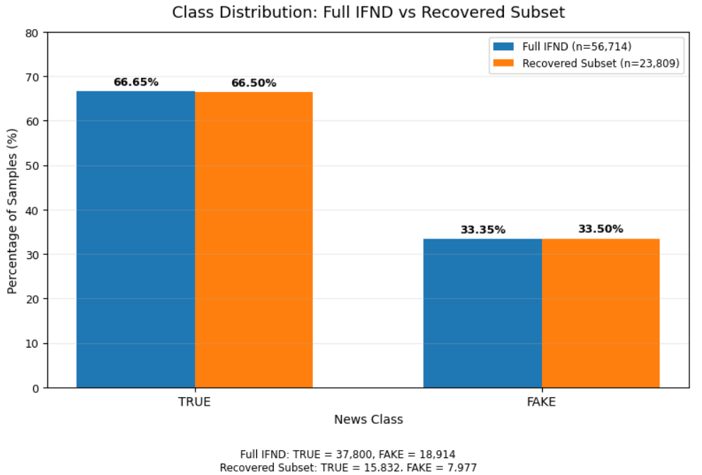
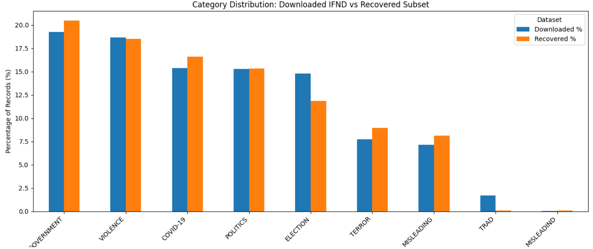
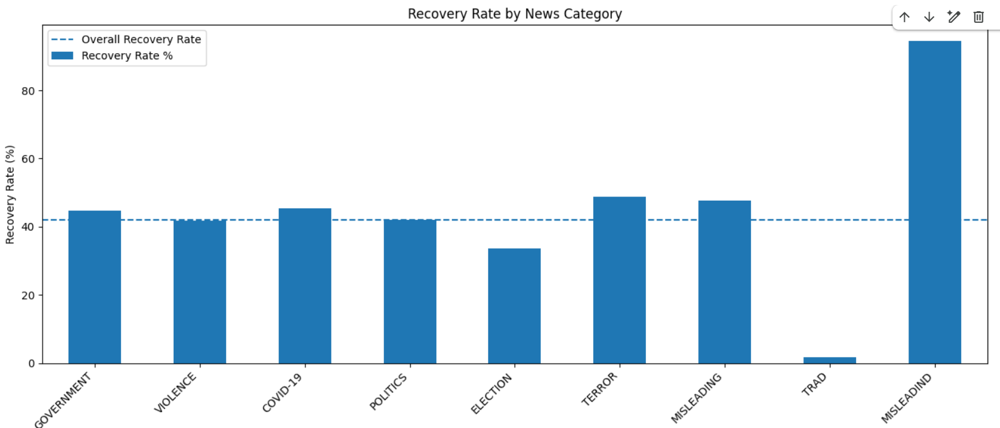
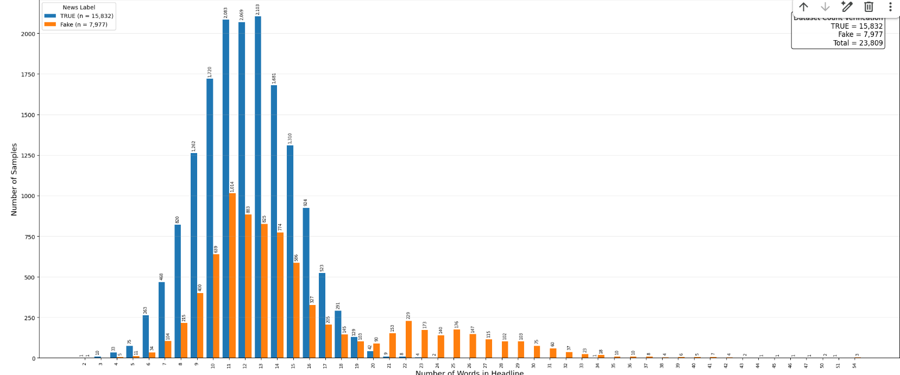
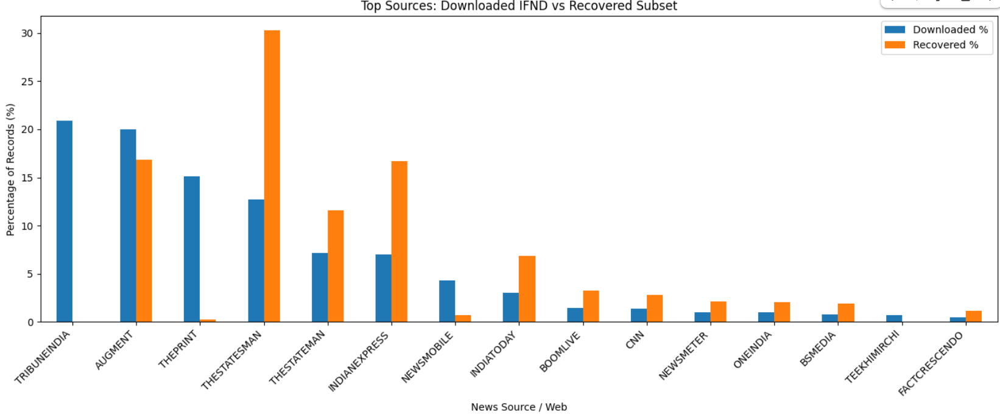

A Multimodal Framework for Fake News Detection in Low Resource Settings
M. G. Sonali K. Jayarathne
Supervisors: Dr. Damayanthi Herath, Dr. Janaka Alawatugoda
Engineering Faculty, University of Peradeniya
| Dataset Version | True | Fake | Total |
|---|---|---|---|
| Original Dataset | 37,800 (66.65%) | 18,914 (33.35%) | 56,714 |
| Clean Text Dataset | 33,684 (65.90%) | 17,426 (34.10%) | 51,110 |
| Final Multimodal Dataset | 15,832 (66.50%) | 7,977 (33.50%) | 23,809 |



Word count analysis was conducted to compare the length distribution of fake and true news headlines.


1. Data Preprocessing
Punctuation and Special Symbol Removal → Stop Word Removal → Stemming → Numerical Value Removal → Lowercase Conversion → Duplicate Statement Removal
2. Feature Representation
Term Frequency–Inverse Document Frequency (TF-IDF)
3. Dataset Preparation Methodology
Data Scraping → Manual Verification → Intelligent Text Augmentation → Augmented Image Retrieval → Latent Dirichlet Allocation (LDA) Topic Modelling
4. Training / Testing Split:
67% Training / 33% Testing
5. Cross-Validation Procedure:
10-Fold Cross-Validation
6. Models Evaluated
Machine Learning (Text): Multinomial Naive Bayes, Logistic Regression, K-Nearest Neighbor, Random Forest, Decision Tree
Deep Learning (Text): LSTM, Bidirectional LSTM
Image Classification (Image): VGG16, ResNet-50
Multimodal (Text+Image): LSTM text branch + VGG16 image branch using an Add fusion layer
| Fold | Accuracy |
|---|---|
| Fold 1 | 93.64% |
| Fold 2 | 94.23% |
| Fold 3 | 93.37% |
| Fold 4 | 93.57% |
| Fold 5 | 94.96% |
| Fold 6 | 93.63% |
| Fold 7 | 93.44% |
| Fold 8 | 94.63% |
| Fold 9 | 94.03% |
| Fold 10 | 93.63% |
| Component | Setting |
|---|---|
| Dataset | 23 683 cleaned records |
| Train / Test Split | 67%:33% |
| Sequence Length | 50 |
| Embedding | 5,000×40 |
| Total Parameters | 256 501 |
| Epochs | 10 / 64 |
| Model | Published IFND | Current Subset |
|---|---|---|
| LSTM | 92.60% | 91.39% |
| Metric | Value |
|---|---|
| Accuracy | 91.39% |
| Precision - TRUE | 93.89% |
| Recall - TRUE | 93.23% |
| F1 - TRUE | 93.56% |
| FAKE Recall | 87.65% |
| Predicted FAKE | Predicted TRUE | |
|---|---|---|
| Actual FAKE | 2,256 | 318 |
| Actual TRUE | 355 | 4,887 |
Common Pipeline
Raw Text -> Feature Representation -> Logistic Regression -> Evaluation
Controlled Components
Purpose: Isolate only the effect of the feature representation rather than changing classifiers
Why? TF-IDF was selected as the traditional statistical baseline because it was used in IFND paper.
Procedure
Text -> TF-IDF Vectorisation -> Logistic Regression -> Prediction
| Metric | Test Result |
|---|---|
| Accuracy | 93.6% |
| Macro F1 | 92.4% |
| FAKE F1 | 89.5% |
| ROC-AUC | 0.99 |
Interpretation: TF-IDF provides a strong traditional baseline for English misinformation detection despite not modelling contextual semantics.
Static embeddings were investigated to determine whether distributed semantic representations improve over sparse TF-IDF features.
| Representation | Classifier | Test Accuracy | Macro F1 |
|---|---|---|---|
| Word2Vec | Logistic Regression | 93% | 92% |
| GloVe | Logistic Regression | 88.34% | 86.49% |
| FastText | Logistic Regression | 93.10% | 91.96% |
Sentence-BERT was introduced to investigate whether sentence-level contextual representations can capture misinformation-related semantic information more effectively than static word embeddings.
Text -> SBERT -> 384-dimensional sentence embedding -> Logistic Regression
| Metric | Test Result |
|---|---|
| Accuracy | 94.97% |
| Macro F1 | 94.20% |
| FAKE F1 | 92.08% |
| ROC-AUC | 0.9769 |
| Average Precision | 0.9680 |
Observation: Sentence-level contextual embeddings improved over the static embedding approaches and provided one of the strongest frozen-representation results.
XLM-R was investigated because the long-term research direction includes low-resource Sinhala misinformation detection and therefore requires a multilingual representation.
English Text -> XLM-R -> 768-dimensional embedding -> Logistic Regression
| Metric | Test Result |
|---|---|
| Accuracy | 94.67% |
| Macro F1 | 93.88% |
| FAKE F1 | 91.69% |
| ROC-AUC | 0.9788 |
| Average Precision | 0.9701 |
Key point: XLM-R performs strongly even without task-specific fine-tuning, motivating its investigation for cross-lingual transfer.
The frozen XLM-R experiment was followed by task-specific fine-tuning using the raw English text and misinformation labels.
Raw Text -> XLM-R Fine-Tuning -> Classification Head -> Prediction
| Metric | Test Result |
|---|---|
| Accuracy | 97.63% |
| Precision | 97.74% |
| Recall | 95.11% |
| F1 | 96.41% |
Training progression:
Observation: Task-specific adaptation substantially improved performance compared with using frozen XLM-R embeddings.
| Representation | Classifier | Accuracy | Macro F1 |
|---|---|---|---|
| TF-IDF | Logistic Regression | 93.6% | 92.4% |
| Word2Vec | Logistic Regression | 93% | 92% |
| GloVe | Logistic Regression | 88.34% | 86.49% |
| FastText | Logistic Regression | 93.10% | 91.96% |
| SBERT | Logistic Regression | 94.97% | 94.20% |
| XLM-R | Logistic Regression | 94.67% | 93.88% |
| Fine-tuned XLM-R | Classification Head | 97.63% | 96.4% |
Finding: Contextual transformer representations outperform most fixed representations, while task-specific fine-tuning produces the strongest English result.
The next question was whether the same representation strategies remain effective when labelled data is severely limited.
Experimental split: 2,400 (80%) : 600 (20%).
TF-IDF was first evaluated on Sinhala to establish a traditional low-resource baseline before introducing multilingual transformer representations.
Sinhala Text -> TF-IDF (10,000 features) -> Logistic Regression
| Metric | Result |
|---|---|
| Accuracy | 69.17% |
| Macro F1 | 43.41% |
| Weighted F1 | 69.49% |
| 10-Fold Macro F1 | 43.40% ± 5.52% |
Important observation: Accuracy is substantially higher than Macro F1 because the UNCERTAIN class dominates the dataset.
XLM-R was evaluated as a multilingual contextual representation to investigate whether pretrained multilingual knowledge can compensate for limited Sinhala training data.
| Approach | Accuracy | Macro F1 |
|---|---|---|
| TF-IDF + LR | 69.17% | 43.41% |
| XLM-R Embedding + LR | 60.67% | 36.50% |
| Fine-tuned XLM-R | 62.83% | 19.29% |
Key finding: Multilingual pretraining alone did not overcome the low-resource and highly imbalanced Sinhala setting.
Fine-tuning further resulted in majority-class prediction, with the model predicting UNCERTAIN for all test samples.
| Class | Samples | F1 |
|---|---|---|
| CREDIBLE | 1,003 | 0.00 |
| FALSE | 27 | 0.00 |
| PARTIAL | 83 | 0.00 |
| UNCERTAIN | 1,887 | 0.77 |
The model effectively learned the dominant UNCERTAIN class rather than learning reliable decision boundaries for all four classes.
Research implication: Multilingual pretraining is not sufficient by itself under severe annotation scarcity and class imbalance.
| English | Sinhala | |
|---|---|---|
| Dataset Size | 23,809 | 3,000 |
| Classification | Binary | 4-class |
| Best Current Approach | Fine-tuned XLM-R | TF-IDF |
| Best Accuracy | 97.63% | 69.17% |
| Best Macro F1 | 96.4% | 43.41% |
Emerging research problem:
Strong multilingual representations ≠ automatic solution for low-resource misinformation detection
High-resource English
Fine-tuned multilingual representation → Strong performance
Low-resource Sinhala
Direct multilingual fine-tuning → Poor minority-class performance
1. Cross-lingual Transfer & Text Feature Adaptation
2. Neural Architecture Exploration
3. Adaptive Representation Learning
4. Dataset Bias & Generalization
5. Low-resource Sinhala Extension
| Dataset | Year | Modalities | Total Size | Train | Validation | Test / CV | Split / Access Notes |
|---|---|---|---|---|---|---|---|
| Factify 2.0 | 2023 | Text, Image | 50,000 samples | 35,000 | 7,500 | 7,500 | 70:15:15 split structure, registration/form access required. |
| MOCHEG | 2023 | Claim + Text Evidence + Images | 15,601 claims | Available after dataset access | Available after dataset access | Available after dataset access | Google form/dataset request, useful for multimodal fact-checking. |
| NewsCLIPpings | 2021 | Text, Image | 1,345,200 pairs | 1,111,828 | 116,468 | 116,904 | Automated mismatched image-text pairs, requires VisualNews and setup script. |
| PolitiFact Fake News | Hugging Face Dataset | Text | 21.3k rows | 17.1k | - | 4.23k | Directly downloadable from Hugging Face, useful as a text-only baseline. |
| r/Fakeddit | 2020 | Text + Images + Metadata | 1M+ samples | Available | Available | Available | Requires separate handling of text and images, use a smaller multimodal subset for laptop experiments. |